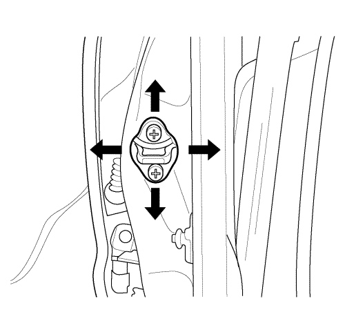
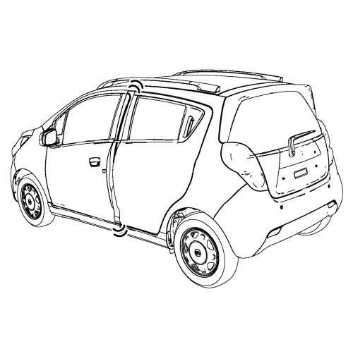
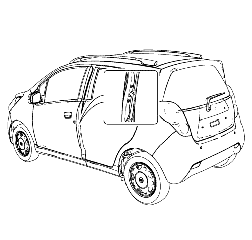
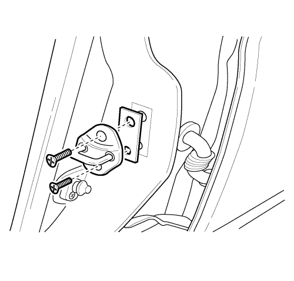

Ajuste del cebador de bloqueo de la puerta
Ajuste hacia atrás/delante

Atención: Al sustituir el estribo de bloqueo de la puerta, utilice exclusivamente piezas de repuesto del fabricante. No utilice una pieza de repuesto de menor calidad o un diseño sustituto. La utilización de una pieza de calidad inferior podría provocar que el sistema de retención de las puertas no funcionara correctamente.
- La puerta debe estar correctamente alineada.

- Cierre la puerta hasta que la horquilla contacte con el cerradero.
- Permanezca al lado de la puerta y muévala hacia fuera y hacia dentro, tocando tan solo el cerradero.

- Se puede ver con facilidad la alineación de la horquilla de la cerradura y del cerradero. La horquilla de la cerradura debe estar perpendicular y caer cerca del centro del cerradero. La horquilla debe caer cerca del centro del cerradero entre el montante central inferior/superior y el extremo del cerradero.

- Si es necesario ajustarlo hacia delante o hacia atrás, siga los siguientes pasos:
| 5.1. | Quite los tornillos del cerradero (1). |
| 5.2. | Retire el espaciador con el fin de mover el cerradero hacia la parte trasera del vehículo (2). |
| 5.3. | Agregue un espaciador de 2 mm (0,08 pulg.) para mover el cerradero hacia la parte delantera del vehículo. |
| 5.4. | Ponga los tornillos del cerradero. |
- Lleve a cabo los ajustes hacia arriba/abajo y hacia dentro/fuera.
Ajuste hacia arriba/hacia abajo y hacia afuera/hacia adentro
Tal vez haya que ajustar el cerradero hacia arriba y hacia abajo o hacia adentro y hacia afuera por diversas razones:
| • | Daños en el bastidor del vehículo a consecuencia de una colisión |
| • | Montaje de un burlete de la puerta nuevo |
| • | Reclamaciones del cliente por exceso de ruido de viento |
| • | Dificultad a la hora de abrir y cerrar la puerta |
Para ajustar el cerradero hacia arriba y hacia abajo o hacia adentro y hacia afuera, ejecute el siguiente procedimiento:
- La puerta debe estar correctamente alineada.
- Afloje los tornillos del cerradero.
Atención: Para que el orificio de montaje del estribo de bloqueo tenga un diseño oblongo y práctico para futuros ajustes del estribo de bloqueo, utilice una amoladora con punta de cabeza plana. Este tipo de punta evitará dañar la placa soporte flotante achaflanada. El estribo de bloqueo y la placa soporte flotante achaflanada son partes importantes de sujeción que pueden afectar al funcionamiento de los sistemas de bloqueo y cierre de la puerta.
- La placa soporte flotante puede desplazarse levemente utilizando los extremos de los tornillos del cerradero. Desplace la placa soporte flotante a la posición deseada.
- Si para llevar a cabo un ajuste correcto es necesario desplazar la placa soporte flotante más allá de lo posible, utilice un taladro eléctrico y una lima redonda de 9,5 mm (0,375 pulg.) con extremo plano para ampliar la abertura de la carrocería en la dirección deseada.
- Apriete los tornillos del cerradero en la posición correcta.
| © Copyright Chevrolet Europe. All rights reserved |